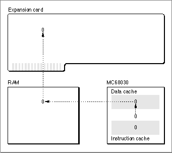
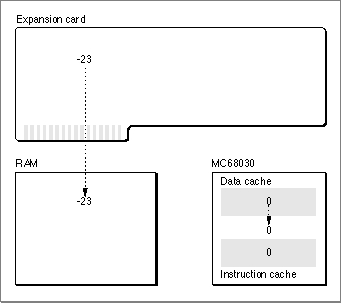
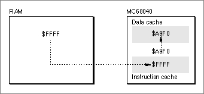

Legacy Document
Important: The information in this document is obsolete and should not be used for new development.
Important: The information in this document is obsolete and should not be used for new development.


About the Memory Management Utilities
You can use the Memory Management Utilities to ensure that
This section explains when and why you might need to use these utilities; for actual implementation details, see the section "Using the Memory Management Utilities," which begins on page 4-13.
- your application's callback routines, interrupt tasks, and stand-alone code can access application global variables or QuickDraw global variables
- your application or driver functions properly in both 24- and 32-bit modes
- data or instructions in the microprocessor's internal caches remain consistent with data or instructions in RAM
The A5 Register
If you write code that accesses your application's A5 world (usually to read or write
the application global variables) at a time that your application is not the current application, you must ensure that the A5 register points to the boundary between
your application's parameters and global variables. Because the Operating System accesses your A5 world relative to the address stored in the A5 register, you can obtain unpredictable results if you attempt to read or write data in your A5 world when the contents of A5 are not valid.There are two general cases in which code might execute when the contents of the A5 register are invalid:
If you install code that is to be executed at either of these times, you must make sure to set up the A5 register upon entry and to restore it before exit. The sections "Accessing the A5 World in Completion Routines" on page 4-14 and "Accessing the A5 World in Interrupt Tasks" on page 4-16 describe how to do this in each case.
- when you install a completion routine that is executed when some other operation (for instance, writing data to disk or playing a sound) is completed
- when you install a routine (for instance, a VBL task) that is called in response to
an interrupt
You might also need to determine the location of your application's A5 world if you want to read information in it from within a stand-alone code segment. You might want to do this in application-defined definition procedures called on behalf of your application. These include
The problem with these kinds of stand-alone code segments is not that the value in the A5 register is incorrect at the time they are executed; rather, it is that they have no A5 world at all. During execution, these stand-alone code segments can effectively "borrow" the A5 world of the current application. However, they must be compiled and linked separately from your application. (A custom window definition procedure, for example, is separately compiled and linked, and then included as a resource of type
- control definition functions
- window definition functions
- menu definition functions
'WDEF'in your application's resource fork.) The linker cannot resolve any offsets from the value in the A5 register, because the code segment doesn't have an A5 world.A stand-alone code segment can solve this problem quite simply at run time, by determining the location of your application's A5 world and then copying the data it needs to access into blocks of memory that it allocates itself. In the code segment, all references to data in the A5 world are indirect: the code segment manipulates local copies of the relevant data. Using this technique, you can avoid explicit symbolic references to the A5 world, which the linker cannot resolve.
In theory, you could use this technique of copying global data into a stand-alone code segment's private storage to access any data contained in your application's A5 world. In practice, however, the A5 world can contain so much data that you wouldn't want to make local copies of it all. In addition, the precise organization of the entire A5 world is not generally determinate. Usually, a custom definition procedure or other stand-alone code segment needs to read only the QuickDraw global variables, which are of fixed size and have a well-documented organization. See the section "Using QuickDraw Global Variables in Stand-Alone Code" on page 4-18 for a complete description of how to read your application's QuickDraw global variables from within a stand-alone code segment.
Addressing Modes
The Memory Manager on the original Macintosh computers uses a 24-bit addressing mode. To the underlying hardware, only the lower 24 bits of any 32-bit address are significant. The CPU effectively ignores the upper 8 bits in a memory address by using a 24-bit address-translation mode. In this mode, the CPU (or the MMU coprocessor, if present) maps all addresses to their lower-order 24 bits whenever it reads or writes a memory location. This led both system software developers and third-party software developers to put those upper 8 bits to other uses. For example, the Memory Manager itself uses the upper 8 bits of the address in a master pointer to maintain information about the associated relocatable block. These upper 8 bits are known as master pointer flag bits.When the Operating System is running in 24-bit mode, you can address at most 1 MB of the address space assigned to a NuBus expansion card. Some cards, however, can work with far more than 1 MB of memory. As a result, a device driver might need to switch the Operating System into 32-bit mode temporarily, so that it can access the entire address range of the associated device (perhaps to copy data from the device's RAM into the heap). When 32-bit address translation is enabled, the CPU or the MMU does not ignore the upper 8 bits of a memory address.
The Operating System provides two utilities,
- Note
- Don't confuse the current address-translation mode of the Macintosh hardware with the current addressing state of the Memory Manager. The addressing state of the Memory Manager is selectable on a per-boot basis and cannot be changed by an application or driver. The address-translation mode of the underlying hardware is controlled by the CPU and MMU (if one is available) and can be changed, if necessary, at any time.

GetMMUModeandSwapMMUMode, that allow you to get and set the current address-translation mode. See "Switching Addressing Modes" on page 4-20 for details.If your device driver does in fact temporarily set the Macintosh hardware into 32-bit address-translation mode, you need to be careful when you pass addresses to the associated device. Suppose, for example, that your driver wants to transfer data to an address in the heap (which is under the control of the Memory Manager). If the
24-bit Memory Manager is in operation, you need to strip the high byte from the memory address; otherwise, the CPU would interpret the high byte of flags as part of the address and transfer the data to the wrong location.
The Operating System provides the
- Note
- You might also need to make the block of memory in the heap immovable in physical memory, so that it is not paged out under virtual memory. See the discussion of locking memory in the chapter "Virtual Memory Manager" in this book.
StripAddressfunction, which you can use to strip the high-order byte from a memory address. Even if you are not writing Macintosh drivers, you might still find it useful to callStripAddress. For example, suppose you need to compare two memory addresses (two master pointers, perhaps). If the system is running the 24-bit Memory Manager and you compare those addresses without first clearing the flag bits, you might get invalid results. You should first callStripAddressto convert those addresses to their correct format before comparing them.As you can see, the operation of
StripAddressis not dependent on the 24-bit or 32-bit address translation state of the hardware, but on the 24-bit or 32-bit addressing state of the Memory Manager. You need to callStripAddressonly when the 24-bit Memory Manager is operating. When the 32-bit Memory Manager is operating,StripAddressreturns unchanged any addresses passed to it, because they are already valid 32-bit addresses. See "Stripping Flag Bits From Memory Addresses" on page 4-21 for complete details on callingStripAddress.Address Translation
When a driver or other software component switches the system to the 32-bit address-translation mode (perhaps to manipulate special hardware on a slot device), certain addresses normally accessible in 24-bit mode are not mapped to the same location by the Macintosh hardware. In particular, the Virtual Memory Manager uses some of the slot address space as part of the addressable RAM. In that case, the standard 24-to-32 bit translation is not valid for slot spaces that the MMU has remapped into the application address space.You can use the
Translate24To32function to translate 24-bit addresses that might have been remapped by the Macintosh hardware. If you intend to use 24-bit addresses when your software is executing in 32-bit mode, your code should check for the presence of that function. If it is available, you should use it to map 24-bit addresses into the 32-bit address space. For details, see "Translating Memory Addresses" on page 4-23.Processor Caches
Some members of the Motorola MC680x0 family of microprocessors contain internal caches that can significantly improve the overall performance of software executing on those microprocessors. For example, the MC68020 microprocessor contains a 256-byte on-board instruction cache, an area of memory within the microprocessor that stores
the most recently executed instructions. Whenever the processor needs to fetch an instruction, it first checks the instruction cache to determine whether the word required is in the cache. The operation is much faster when the information is in the cache than when it is only in RAM (which is external to the microprocessor).Some other members of the MC680x0 family of microprocessors also contain an internal data cache, an area of memory that holds recently accessed data. The data cache operates much as the instruction cache does, but it caches data instead of instructions. Before reading data from RAM, the microprocessor checks the data cache to determine whether the operand required for an instruction is in the cache. Again, the overall performance of the software is greatly increased by the operation of the data cache.
Table 4-1 lists the available caches and their sizes for the various microprocessors currently used in Macintosh computers.
The operation of any available instruction and data caches is generally transparent to your application. In certain cases, however, you need to make sure that the information in the caches and the corresponding information in main memory remain consistent. When some information in RAM changes but the corresponding information in the cache does not, the cached information is said to be stale. The following two sections describe in detail how cached instructions and data can become stale. You can avoid using stale instructions or data by flushing the affected cache whenever you do something that can cause instructions or data to become stale. See "Manipulating the Processor Caches," beginning on page 4-29, for routines that you can use to maintain consistency between a cache and main memory.
Stale Instructions
Any time that you modify part of the executable code of your application or other software, you risk creating stale instructions in the instruction cache. Recall that the microprocessor stores the most recently executed instructions in its internal instruction cache, separately from main memory. Whenever your code modifies itself or any data in memory that contains executable code, there is a possibility that a copy of the modified instructions will be in the instruction cache (because they were executed recently). If so, attempting to execute the modified instructions actually results in the execution of the cached instructions, which are stale.You can avoid using stale instructions by flushing the instruction cache every time you modify executable instructions in memory. Flushing the cache invalidates all entries in it and forces the processor to refill the cache from main memory.
Any code that modifies itself directly is likely to create stale instructions in the instruction cache. In addition, you can create stale instructions by modifying other parts of memory that contain executable instructions. For example, if you modify jump table entries, you'll need to flush the instruction cache to avoid using stale instructions. Similarly, if you install patches by copying code from one part of memory to another and modifying
- IMPORTANT
- Flushing the instruction cache has an adverse effect on the CPU's performance. You should flush the instruction cache only when absolutely necessary.
JMPinstructions in order to execute the original routine, you'll need to flush the instruction cache. See the description of theFlushInstructionCacheprocedure on page 4-30 for details.The system software automatically flushes the instruction cache when you call certain traps that are often used to move code from one location to another in memory. The system flushes the instruction cache whenever you call
_BlockMove,_Read,_LoadSeg, and_UnloadSeg.
Other traps may flush the instruction cache. In general, you need to worry about stale instructions only when your application moves code and not when the system software moves it.
- WARNING
- The
_BlockMovetrap is not guaranteed to flush the instruction cache for blocks that are 12 bytes or smaller. If you use_BlockMoveto move very small blocks of code, you should flush the instruction cache yourself.Stale Data
A cache may contain stale data whenever information in RAM is changed and that information is already cached in the microprocessor's data cache. Suppose, for example, that a computer contains an expansion card capable of DMA data transfers from the card to main memory. The card typically reads commands from a buffer in RAM, executes the commands, and writes status information back to the buffer when the command completes. Before the card reads a command, the CPU sets up the command buffer and initializes the status code to 0. Figure 4-2 shows this situation on a computer with an MC68030 microprocessor.Figure 4-2 Initializing a status code

The MC68030 has a write-through cache: any data written to the cache is immediately written out to RAM (to avoid stale data in RAM). As a result, the cache and RAM both contain the same value (0) for the status code. Suppose next that the expansion card executes the first command and writes a nonzero status code to RAM. The card then sends an interrupt to the CPU, indicating that the operation has completed.
At this point, the microprocessor might attempt to read the status code returned by the external hardware. However, because the status code is in the microprocessor's data cache, the CPU reads the value in the cache, which is stale, instead of the value in main memory (see Figure 4-3).

To avoid using this stale data, have your driver flush the data cache whenever you transfer data directly into main memory.
The MC68040 has a copy-back cache: any data written to the cache is written to RAM only when necessary to make room in the cache for data accessed more recently or when the cache is explicitly flushed. As you can see, a copy-back cache allows for even greater performance improvements than a write-through cache, because the data in the cache has to be written to main memory less often. This is extremely valuable for relatively small amounts of data that are needed for only a short while, such as local stack frames for C or Pascal function calls.
- IMPORTANT
- Flushing the data cache has an adverse effect on the CPU's performance. You should flush the data cache only when absolutely necessary.
Because the data in a copy-back cache is written to main memory only in certain circumstances, it's possible to get stale data in RAM. If you write data that is to be read by non-CPU devices (such as an expansion card that performs DMA operations), you need to flush the data cache before instructing the alternate bus master to read that data. If you don't update the RAM, the DMA transfer from RAM will read stale data.
A copy-back data cache can also lead to the use of invalid instructions if the stale
data in RAM contains executable code. When fetching instructions, the CPU looks only in the instruction cache and (if necessary) in main memory, not in the data cache. Because the instruction and data caches are separate, it's possible that the CPU will fetch invalid instructions from memory, in the following way. Suppose that you alter some jump table entries and, in doing so, write the value $A9F0 (that is, the trap number of the_LoadSegtrap) to memory. If the data cache is a copy-back cache, the data in main memory is not updated immediately, but only when necessary to make room in the cache (or when you explicitly flush the cache). As a result, the CPU might read invalid instructions from memory when attempting to execute a routine whose jump table entry you changed. Figure 4-4 illustrates this problem.Figure 4-4 Reading invalid instructions

To avoid reading invalid instructions in this way, you need to flush the data cache before calling any routines whose jump table entries you've altered. More generally, whenever you need to flush the instruction cache, you also first need to flush the data cache--but only if you've changed any executable code and those changes might not have been written to main memory.
Another way to avoid using stale data is to prevent the data from being cached (and hence from becoming stale). The Virtual Memory Manager function
LockMemorylocks a specified range of pages in physical RAM and either disables the data cache or marks the specified pages as noncacheable (depending on what's possible and what makes the most sense). Accordingly, you need not explicitly flush the processor's data cache for data buffers located in pages that are locked in memory. See the chapter "Virtual Memory Manager" in this book for more information about locking page ranges.